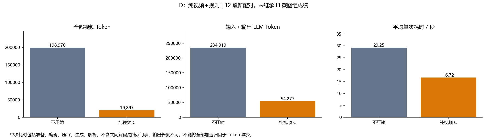
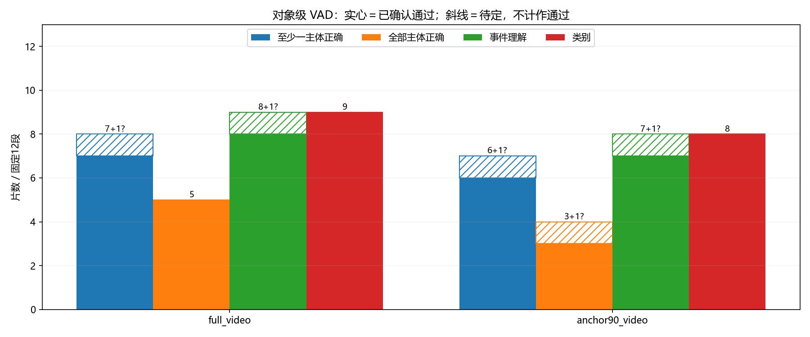

D：纯视频压缩热力图
两组均只有视频与规则，不使用 I3 局部图片。保留原对象描述格式。所有帧仍先经过视觉编码器；压缩仅减少语言模型侧视频 Token。
亮黄＝保留；黑紫＝删除。热力图是实际保存的选择掩码，不代表注意力或正确对象。图片未用推理输出、参考标注或人工框构造。

逐片视觉复核
固定12段；助手同会话非盲复核。斜线保留待定，不作成功计数；尚非独立人核。

特征位置不等于像素遮挡：所有原帧先完整经过视觉编码器。黑块表示该位置的特征未进入压缩后序列，不能据此断言模型完全没见到该人物。